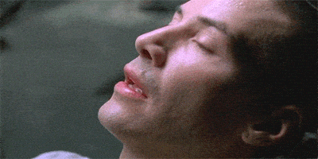
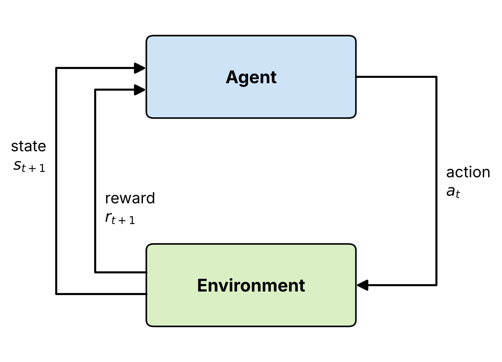
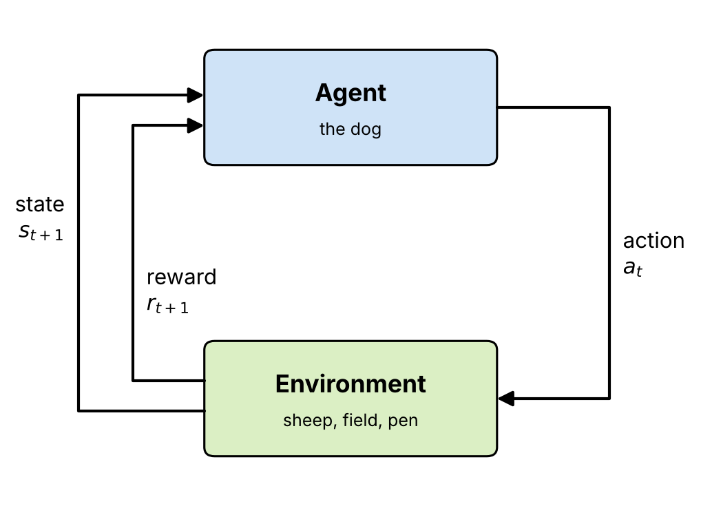
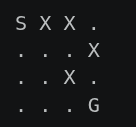

Monte Carlo and Temporal Difference methods (SARSA)
DOWNLOAD MODELS HERE

At every step, the agent and the environment take turns:
We often write \(s\) for the state now and \(s'\) for the next state, so \(s'\) is the same as \(s_{t+1}\).
The goal of the agent is not to get the biggest reward right now, but the biggest total reward over time. We call this total the return.

At every step, the agent and the environment take turns. The agent sees the state \(s_t\) and chooses an action \(a_t\). The environment then changes to a new state \(s_{t+1}\), and gives the agent a reward \(r_{t+1}\).
The goal of the agent is not to get the biggest reward right now, but the biggest total reward over time. We call this total the return.

The future depends only on the present and not on the past.
\[P(s_{t+1} \mid s_t) = P(s_{t+1} \mid s_1, s_2, \dots, s_t)\]
Imagine a ball on a table. The wind pushes the ball around a bit.
| Current state | Next state | Transition probability |
|---|---|---|
| center | center | 0.8 |
| center | north | 0.1 |
| center | east | 0.1 |
| center | south | 0.0 |
| center | west | 0.0 |
Now we add an agent that decides. An MDP has five elements:
We use a corridor of 5 cells, with one dog (D), one sheep (S), and the pen (P) at the end.
| 1 | 2 | 3 | 4 | 5 |
|---|---|---|---|---|
| D | . | S | . | P |
The dog is our agent: it learns what to do. The sheep is part of the environment, just like the corridor and the pen, and it follows these rules:
| Situation | What the sheep does | Probability |
|---|---|---|
| The dog is right next to the sheep | it steps away from the dog | 1 |
| The dog is not next to the sheep | it stays and grazes | 0.8 |
| it wanders one step left | 0.1 | |
| it wanders one step right | 0.1 |
The episode terminates when the sheep is in the pen (terminal state).
:::
| 1 | 2 | 3 | 4 | 5 |
|---|---|---|---|---|
| D | . | S | . | P |
| sheep in 1 | sheep in 2 | sheep in 3 | sheep in 4 | sheep in 5 (pen) | |
|---|---|---|---|---|---|
| dog in 1 | x | (1, 2) | (1, 3) | (1, 4) | (1, 5) |
| dog in 2 | (2, 1) | x | (2, 3) | (2, 4) | (2, 5) |
| dog in 3 | (3, 1) | (3, 2) | x | (3, 4) | (3, 5) |
| dog in 4 | (4, 1) | (4, 2) | (4, 3) | x | (4, 5) |
| dog in 5 | (5, 1) | (5, 2) | (5, 3) | (5, 4) | x |
| 1 | 2 | 3 | 4 | 5 |
|---|---|---|---|---|
| D | . | S | . | P |
This is the Markov table again, but now the next state also depends on the action of the dog.
| Current state \(s\) | Action \(a\) | Next state \(s'\) | \(P^a_{ss'}\) |
|---|---|---|---|
D . S . P (1, 3) |
stay | D . S . P (1, 3) |
0.8 |
D . S . P (1, 3) |
stay | D S . . P (1, 2) |
0.1 |
D . S . P (1, 3) |
stay | D . . S P (1, 4) |
0.1 |
D . S . P (1, 3) |
right | . D . S P (2, 4) |
1 |
The dog gets \(-0.1\) for every step, and \(+10\) when the sheep walks into the pen.
| Current state \(s\) | Action \(a\) | Next state \(s'\) | \(R^a_{ss'}\) |
|---|---|---|---|
D . S . P (1, 3) |
stay | D . S . P (1, 3) |
-0.1 |
D . S . P (1, 3) |
right | . D . S P (2, 4) |
-0.1 |
. D . S P (2, 4) |
right | . . D . S (3, 5) |
+10 |
The agent wants the biggest total reward over time: the return. The simplest version just adds up all rewards:
\[R_t = r_{t+1} + r_{t+2} + r_{t+3} + \dots\]
This gives two problems.
In variant 2 the dog gets +1 for every step the sheep is in the pen, and the task never ends.
Imagine two dogs in variant 1, without the step penalty:
Both get the same return, but dog A is clearly better.
We give rewards that come later a smaller weight:
\[R_t = r_{t+1} + \gamma r_{t+2} + \gamma^2 r_{t+3} + \dots = \sum_{k=0}^{\infty} \gamma^k r_{t+k+1}\]
With \(\gamma = 0.9\), the weights are:
| step | 1 | 2 | 3 | 10 | 50 |
|---|---|---|---|---|---|
| weight \(\gamma^k\) | 1 | 0.9 | 0.81 | 0.39 | 0.006 |
How good is it for the agent to be in state \(s\), if it follows policy \(\pi\)?
\[V^{\pi}(s) = \mathbb{E}_{\pi}\left[R_t \mid s_t = s\right]\]
How good is it to do action \(a\) in state \(s\), and then follow policy \(\pi\)?
\[Q^{\pi}(s, a) = \mathbb{E}_{\pi}\left[R_t \mid s_t = s, a_t = a\right]\]
A Q table for the mini world could look like this. The dog is in cell 1 and the sheep is in cell 3:
| 1 | 2 | 3 | 4 | 5 |
|---|---|---|---|---|
| D | . | S | . | P |
| State | Action | Value |
|---|---|---|
D . S . P (1, 3) |
left | 7.5 |
D . S . P (1, 3) |
stay | 8.1 |
D . S . P (1, 3) |
right | 8.9 |
So far we have described the herding task as an MDP:
The goal of the dog is to find the policy \(\pi\) that gives the highest return.
To find it, we want to know how good each state (\(V\)) or each action in a state (\(Q\)) is. If we know \(Q\), the best policy is easy: in every state, pick the action with the highest \(Q\) value.
So the question is: how do we compute \(V\) or \(Q\)?
If we know the entire MDP (so also \(P^a_{ss'}\) and \(R^a_{ss'}\)), we can compute them exactly, using the Bellman equation.
The value of a state = the reward now + the discounted value of where you end up next
\[V^{\pi}(s) = \sum_a \pi(s, a) \sum_{s'} P^a_{ss'}\left[R^a_{ss'} + \gamma V^{\pi}(s')\right]\]
\[Q^{\pi}(s, a) = \sum_{s'} P^a_{ss'}\left[R^a_{ss'} + \gamma \sum_{a'} \pi(s', a') Q^{\pi}(s', a')\right]\]
Look at the return again. If we take \(\gamma\) out of all rewards after the first one, what is left between the brackets is the return of the next step:
\[R_t = r_{t+1} + \gamma r_{t+2} + \gamma^2 r_{t+3} + \dots = r_{t+1} + \gamma \underbrace{\big(r_{t+2} + \gamma r_{t+3} + \dots\big)}_{R_{t+1}} = r_{t+1} + \gamma R_{t+1}\]
So the return now is the reward now, plus the discounted return from the next step.
The Bellman equation uses the same trick for values. You can read it from the outside in:
\[V^{\pi}(s) = \underbrace{\sum_a \pi(s, a)}_{\text{what the dog does}} \; \underbrace{\sum_{s'} P^a_{ss'}}_{\text{what the sheep/environment does}} \Big[\underbrace{R^a_{ss'}}_{\text{reward now}} + \gamma \underbrace{V^{\pi}(s')}_{\text{the same equation again}}\Big]\]
For the best policy, the dog does not average over its actions, but takes the best one. This is the Bellman optimality equation:
\[V^*(s) = \max_a \sum_{s'} P^a_{ss'}\left[R^a_{ss'} + \gamma V^*(s')\right]\]
If we know \(P^a_{ss'}\) and \(R^a_{ss'}\), we can find \(V^*\) step by step (value iteration):
Then the best policy is: in every state, pick the action with the highest value
\[\pi^*(s) = \arg\max_a \sum_{s'} P^a_{ss'}\left[R^a_{ss'} + \gamma V^*(s')\right]\]
The dog is in cell 1, the sheep in cell 3, and the dog steps right:
| 1 | 2 | 3 | 4 | 5 |
|---|---|---|---|---|
| D | . | S | . | P |
The dog is now next to the sheep, so the sheep always steps away. We end up in \((2, 4)\) with probability 1:
| 1 | 2 | 3 | 4 | 5 |
|---|---|---|---|---|
| . | D | . | S | P |
We use \(\gamma = 0.9\). From \((2,4)\) the dog will pen the sheep in the next step, so \(V(2,4) = 10\):
\[Q((1,3), right) = \underbrace{1}_{P^a_{ss'}} \times [\underbrace{-0.1}_{R^a_{ss'}} + 0.9 \times \underbrace{10}_{V(2,4)}] = 8.9\]
In the mini world, we know \(P^a_{ss'}\) and \(R^a_{ss'}\), because we wrote the sheep rules ourselves.
But the dog does not get these rules. It only sees what happens after it acts.
And in a more complex world, nobody can write them down: think of a real sheep, or a board where humans control their actions in a noisy way, or think about the real world (flying a helicopter).
So we estimate the values from experience: try things, and see what happens. That is reinforcement learning.
Two ways today:
What went wrong? The agent sometimes kept bumping into the same wall:

In other words, the policy is:
\[\pi(s) = \begin{cases} \text{a random action from } A & \text{with probability } \epsilon \\ \arg\max_a Q(s, a) & \text{with probability } 1 - \epsilon \end{cases}\]
\[Q(s, a) \leftarrow Q(s, a) + \alpha\,(R_t - Q(s, a))\]
One episode with three steps. The dog first bumps into the wall, then steps right twice, and the sheep walks into the pen:
| step | world | action |
|---|---|---|
| 0 | D . S . P |
left (bumps into the wall) |
| 1 | D . S . P |
right |
| 2 | . D . S P |
right, the sheep walks into the pen |
At the end of the episode we compute the returns backwards, with \(\gamma = 0.9\): \(R_t = r_{t+1} + \gamma R_{t+1}\)
| \(t\) | \((s_t, a_t)\) | \(r_{t+1}\) | \(R_t\) |
|---|---|---|---|
| 2 | ((2, 4), right) | +10 | 10 |
| 1 | ((1, 3), right) | -0.1 | \(-0.1 + 0.9 \times 10 = 8.9\) |
| 0 | ((1, 3), left) | -0.1 | \(-0.1 + 0.9 \times 8.9 = 7.91\) |
After this episode, we update Q with these returns. We use \(\alpha = 0.1\) and the update rule:
\[Q(s, a) \leftarrow Q(s, a) + \alpha\,(R_t - Q(s, a))\]
| \((s, a)\) | initial \(Q(s, a)\) | \(R_t\) | update | new \(Q(s, a)\) |
|---|---|---|---|---|
| ((2, 4), right) | 0 | 10 | \(0 + 0.1\,(10 - 0)\) | 1.0 |
| ((1, 3), right) | 0 | 8.9 | \(0 + 0.1\,(8.9 - 0)\) | 0.89 |
| ((1, 3), left) | 0 | 7.91 | \(0 + 0.1\,(7.91 - 0)\) | 0.791 |
Monte Carlo moves \(Q(s, a)\) towards the real return:
\[Q(s, a) \leftarrow Q(s, a) + \alpha\,(R_t - Q(s, a))\]
The problem: we only know \(R_t\) at the end of the episode. But remember that the return is nested:
\[R_t = r_{t+1} + \gamma R_{t+1}\]
After one step we already know \(r_{t+1}\). For the rest, \(R_{t+1}\), we use our own estimate: the Q value of where we are now, \(Q(s', a')\).
\[Q(s, a) \leftarrow Q(s, a) + \alpha\,\big(\underbrace{r + \gamma Q(s', a')}_{\text{instead of } R_t} - Q(s, a)\big)\]
This rule uses State, Action, Reward, next State, next Action:
\[Q(s, a) \leftarrow Q(s, a) + \alpha\,\big(r + \gamma Q(s', a') - Q(s, a)\big)\]
Variant 2: the pen is in the middle (cell 3). \(+1\) for every step the sheep is in the pen, \(-0.1\) when it is outside. No end.
| 1 | 2 | 3 | 4 | 5 |
|---|---|---|---|---|
| D | S | P | . | . |
| 1 | 2 | 3 | 4 | 5 |
|---|---|---|---|---|
| D | . | S | . | . |
\[Q((1,2), stay) = 0.2 + 0.1\,\big(1 + 0.9 \times 0.5 - 0.2\big) = 0.2 + 0.1 \times 1.25 = 0.325\]
\[\underbrace{Q(s, a)}_{0.2} \leftarrow \underbrace{Q(s, a)}_{0.2} + \underbrace{\alpha}_{0.1}\,\big(\underbrace{r}_{1} + \underbrace{\gamma}_{0.9}\,\underbrace{Q(s', a')}_{0.5} - \underbrace{Q(s, a)}_{0.2}\big)\]
| Monte Carlo | SARSA (TD) | |
|---|---|---|
| Learns | at the end of an episode | after every step |
| Target | the real return \(R_t\) | \(r + \gamma Q(s', a')\): one real step + an estimate |
| Needs an end? | yes | no |
| Uses its own estimates? | no | yes (bootstrapping) |
\[Q(s, a) = Q(s, a) + \alpha\,\big(r + \gamma \max_{a'} Q(s', a') - Q(s, a)\big)\]
The MDP
| \(s\), \(s'\) | the state now, the next state |
| \(a\), \(a'\) | the action now, the next action |
| \(r\) | the reward after an action |
| \(P^a_{ss'}\) | transition probability: from \(s\) to \(s'\) with action \(a\) |
| \(R^a_{ss'}\) | reward for going from \(s\) to \(s'\) with action \(a\) |
| \(\gamma\) | discount factor: how much future rewards count (0 to 1) |
| \(\pi(s)\) | policy: what action to do in state \(s\) |
Terms
| Episode | one run from start to end (e.g. until the sheep is in the pen) |
| Episodic / continuous | with / without a terminal state |
| On-policy | learn about the policy you follow (Monte Carlo, SARSA) |
| Off-policy | learn about the best policy while exploring (Q learning) |
| Bootstrapping | using your own estimate \(Q(s',a')\) instead of the real future |
| Central / independent | one Q table for all agents / one Q table per agent |
The learning rules
| Epsilon-greedy | random action with probability \(\epsilon\), otherwise the best one |
| Monte Carlo | \(Q(s,a) = Q(s,a) + \alpha\,(R_t - Q(s,a))\), after the episode |
| TD prediction | \(V(s) = V(s) + \alpha\,(r + \gamma V(s') - V(s))\), every step |
| SARSA | \(Q(s,a) = Q(s,a) + \alpha\,(r + \gamma Q(s',a') - Q(s,a))\), every step |
| Q learning | \(Q(s,a) = Q(s,a) + \alpha\,(r + \gamma \max_{a'} Q(s',a') - Q(s,a))\) |
| TD error | \(r + \gamma Q(s',a') - Q(s,a)\): better or worse than expected? |
| \(\alpha\) | learning rate: how far we move towards the target |
Values and returns
| Return | \(R_t = r_{t+1} + \gamma r_{t+2} + \gamma^2 r_{t+3} + \dots\) (in the notebooks: G) |
| Backwards | \(R_t = r_{t+1} + \gamma R_{t+1}\) |
| State value | \(V^{\pi}(s)\): how good is it to be in \(s\) |
| Q value | \(Q^{\pi}(s, a)\): how good is it to do \(a\) in \(s\) |
| Bellman | value now = reward + \(\gamma\) value next |